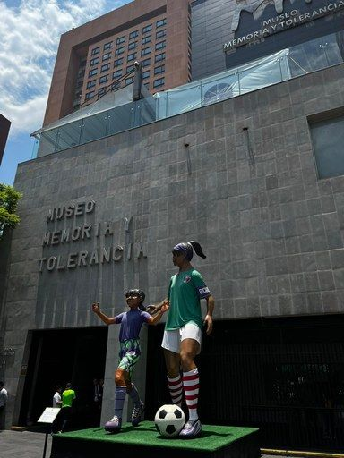
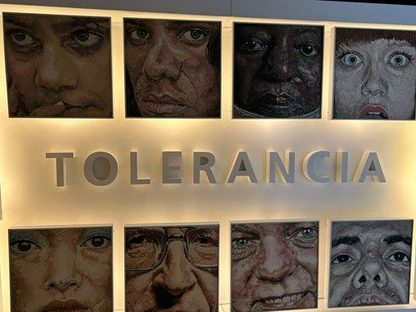
Un recorrido documental interactivo
Fotorrevista Ética
Digital y Humana
Memoria, tecnología y responsabilidad social
Integrantes · González Colín Daniel · Marín Hernández Fernando · Peña Paredes Angel
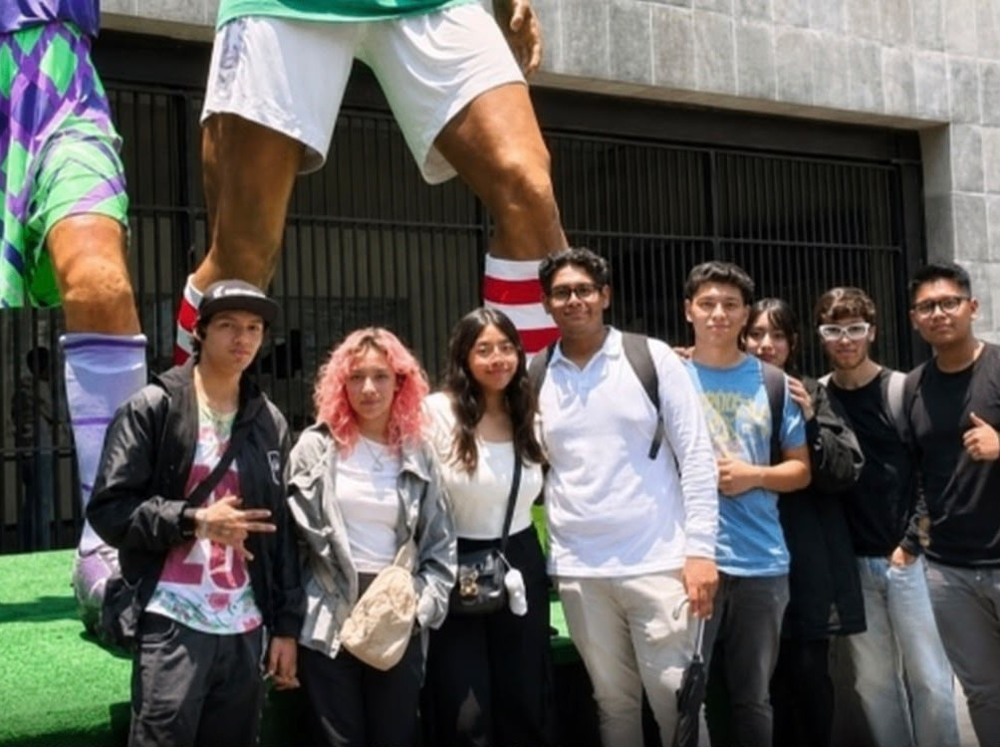
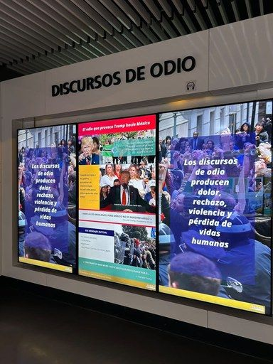
Cronología del recorrido
De la propaganda al exterminio
- 1923
Golpe de estado fallido de Hitler; es arrestado y escribe Mi lucha en prisión.
- 1933
Hitler es nombrado canciller. Se abre el primer campo de concentración en Dachau; quema de libros y boicot a comercios judíos.
- 1934
Muerte de Hindenburg. Hitler se proclama Führer y dictador absoluto.
- 1941
Invasión del frente oriental; comienzan los Einsatzgruppen, comandos móviles de asesinato.
- 1942
Conferencia de Wannsee: se planea el exterminio de once millones de personas.
- 1943
La prensa mexicana reporta «los convoyes de la muerte» rumbo a un destino desconocido.
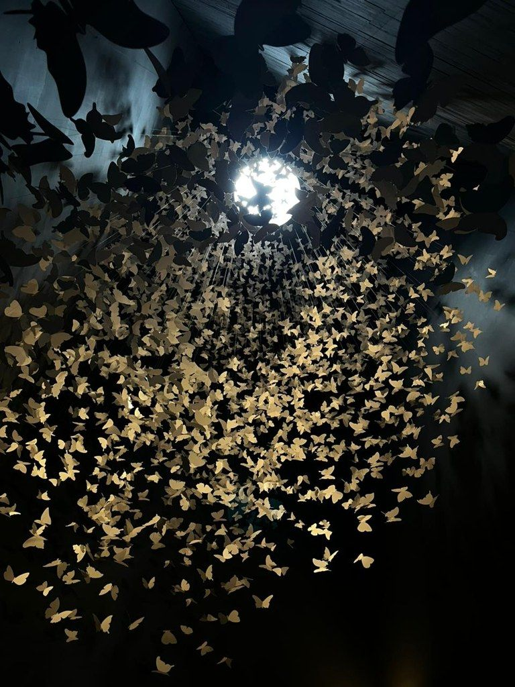
Sala 01
Memorial
de los Niños
Holocausto durante la Segunda Guerra Mundial
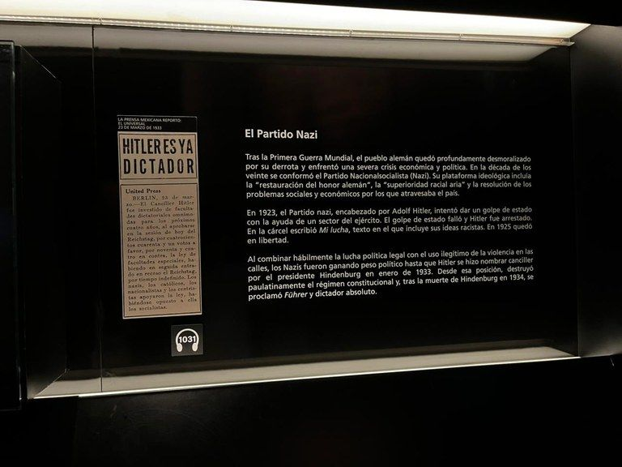
Sala 02
El Partido Nazi
La consolidación del Partido Nazi se basó en un nacionalismo radical y la promesa de restaurar el orgullo alemán tras la crisis. Utilizando una cuidadosa estrategia que combinó la propaganda masiva, la movilización popular y la violencia sistemática, el régimen logró erosionar las instituciones democráticas desde adentro hasta otorgarle a Adolf Hitler el control absoluto del Estado.
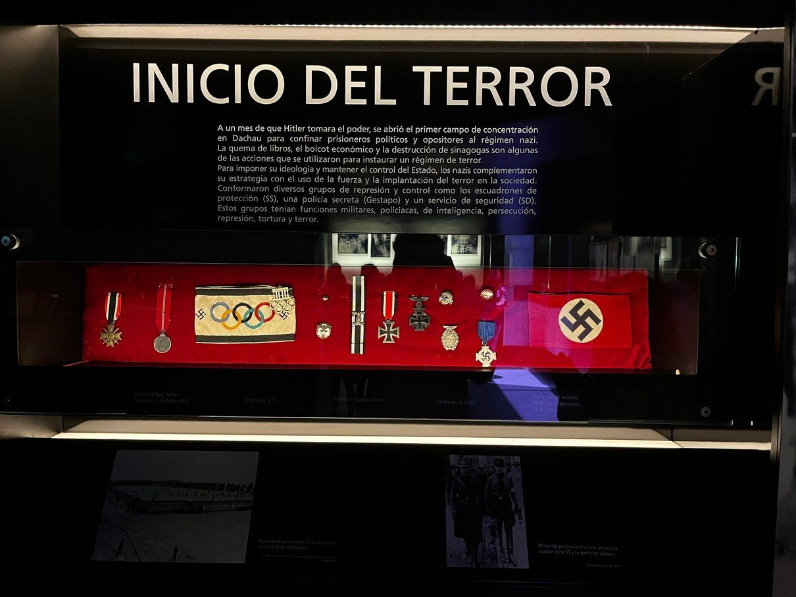
Sala 03
Inicio del Terror
Tras asumir el control total, el régimen instauró un estado policial basado en la persecución inmediata de la disidencia. Con la apertura de los primeros campos de concentración como Dachau y la creación de cuerpos especializados como la Gestapo y las SS, el miedo se convirtió en la principal herramienta de control social, anulando cualquier derecho civil o político.
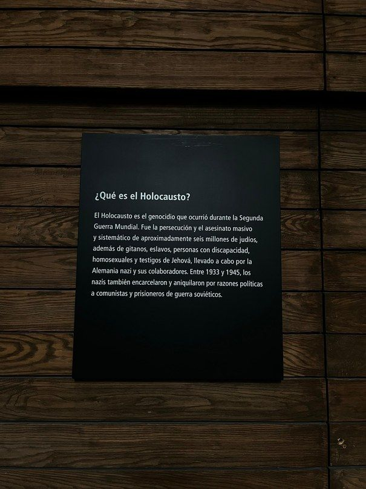
Sala 04
Holocausto
Lo que comenzó con la exclusión política culminó en un proyecto de exterminio sin precedentes. Durante doce años, se ejecutó una política de asesinato masivo que buscaba la eliminación de cualquier colectivo considerado "indeseable" por el régimen. Judíos, homosexuales, eslavos y opositores fueron víctimas de una persecución avalada por el Estado que redefinió los límites del horror global.
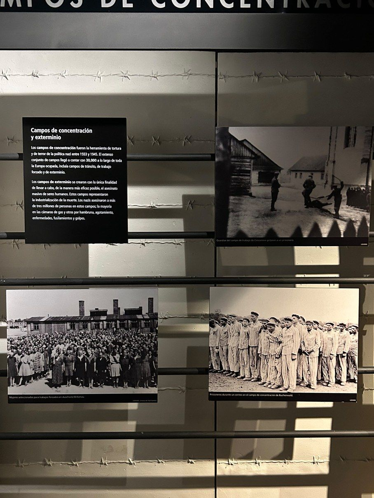
Sala 05
Campos de Concentración
y Exterminio
El verdadero abismo de este sistema radicó en la deshumanización y la industrialización del asesinato masivo. Los campos de exterminio fueron diseñados con la única y fría finalidad de erradicar vidas humanas de la manera más eficaz posible. A través de cámaras de gas, fusilamientos, hambrunas y un agotamiento sistemático, el régimen convirtió la violencia masiva en un proceso de producción industrial.
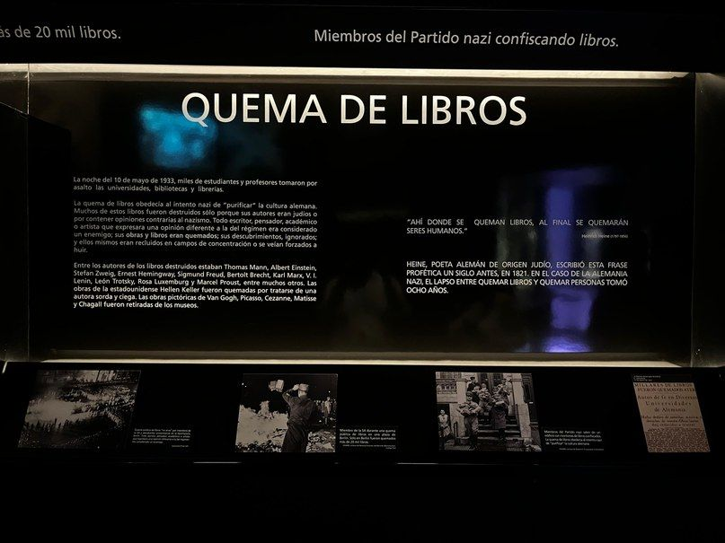
Sala 06
Quema de Libros
El fanatismo ideológico no solo persiguió a los individuos, sino también a su legado. Cientos de bibliotecas fueron saqueadas para destruir las obras de mentes brillantes como Albert Einstein o Sigmund Freud, mientras los museos eran despojados del arte de creadores vanguardistas. Al borrar la literatura y el arte considerados "enemigos", el régimen intentó erradicar el espíritu crítico y reescribir la memoria de una nación.
«Ahí donde se queman libros, al final se queman también seres humanos.»
Heine, poeta alemán de origen judío — frase escrita un siglo antes; en 1933, la Alemania nazi convirtió su profecía en hecho.
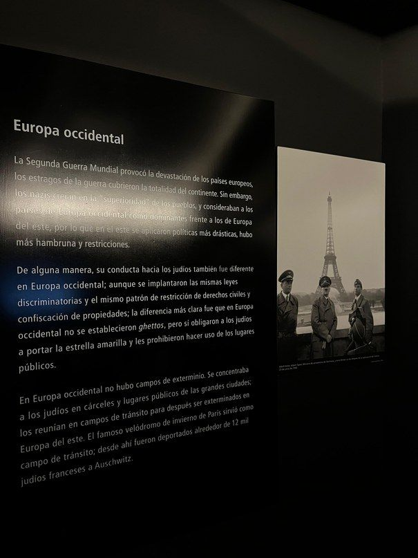
Sala 07
Europa Occidental
La expansión del régimen hacia Europa occidental transformó radicalmente la vida de las naciones ocupadas. Aunque los métodos de control variaron respecto al frente oriental debido a las teorías raciales del nazismo, la población judía sufrió la misma pérdida sistemática de derechos civiles. La imposición de la estrella amarilla y la exclusión de los espacios públicos marcaron el inicio de una segregación oficial e implacable.
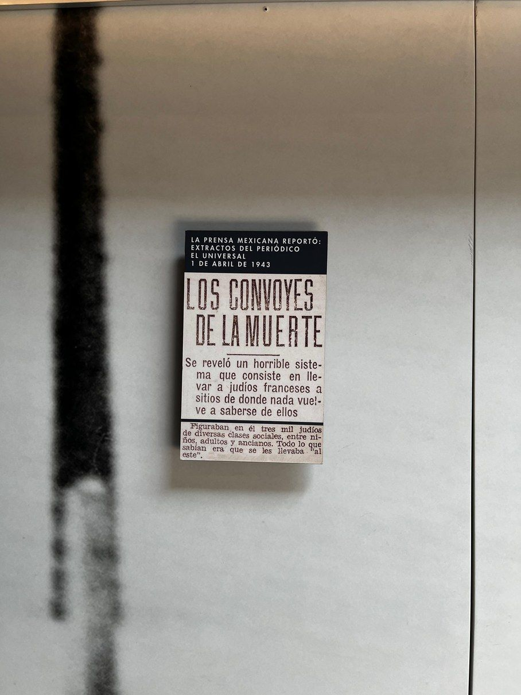
Sala 08
Prensa Mexicana
1 de abril de 1943
«Los convoyes de la muerte. Se reveló un horrible sistema que consiste en llevar a judíos franceses a sitios de donde nada vuelve a saberse de ellos. Figuraban en él tres mil judíos de diversas clases sociales, entre niños, adultos y ancianos. Todo lo que sabían era que se les llevaba "al este".»
Extractos del periódico El Universal, tal como los reporta la exhibición del museo.
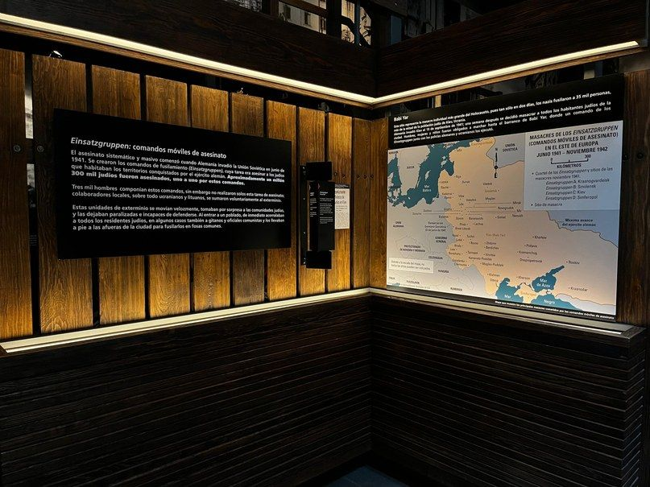
Sala 09
Comandos Móviles
de Asesinato
La invasión del frente oriental en 1941 desató una modalidad de exterminio directa y brutal a través de los Einsatzgruppen. Estos escuadrones móviles de ejecución avanzaban junto al ejército para exterminar de forma inmediata a comunidades enteras. Sin el uso de complejos industriales de reclusión, más de un millón de personas fueron ejecutadas de cara a cara y arrojadas a fosas comunes a las afueras de los pueblos conquistados.
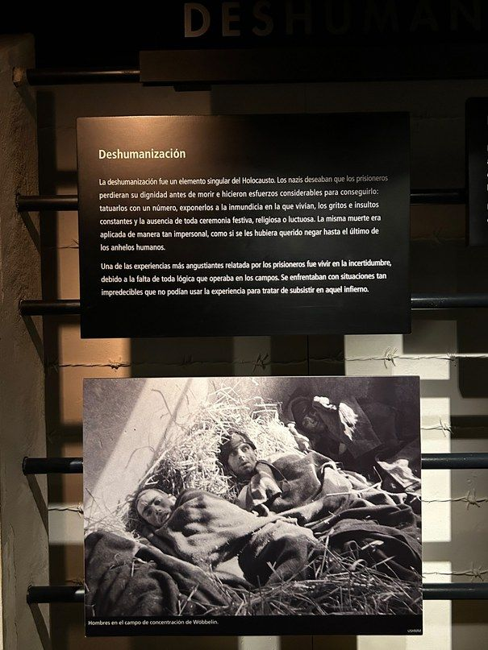
Sala 10
Deshumanización
Los registros fotográficos de campos como Wöbbelin capturan los efectos más devastadores del abandono institucionalizado. El régimen no solo buscó el exterminio físico, sino el desmantelamiento previo de la dignidad. Al tratarse la muerte de manera tan impersonal y desapegada, el sistema totalitario pretendió borrar el último rastro de individualidad de millones de seres humanos.
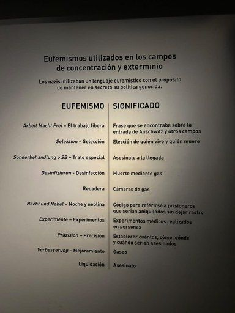
Sala 11
Eufemismos
El control del régimen totalitario también se ejerció mediante la distorsión absoluta del lenguaje. A través de un elaborado sistema de eufemismos burocráticos, palabras cotidianas o médicas como "desinfección", "regadera" o "trato especial" fueron camufladas para encubrir la ejecución de crímenes masivos. Esta manipulación lingüística buscaba normalizar la crueldad y ocultar la verdad ante los ojos del mundo.
| Eufemismo | Significado |
|---|---|
| Arbeit Macht Frei — El trabajo libera | Frase que se encontraba sobre la entrada de Auschwitz y otros campos |
| Selektion — Selección | Elección de quién vive y quién muere |
| Sonderbehandlung o SB — Trato especial | Asesinato a la llegada |
| Desinfizieren — Desinfección | Muerte mediante gas |
| Regadera | Cámaras de gas |
| Nacht und Nebel — Noche y neblina | Código para referirse a prisioneros que serían aniquilados sin dejar rastro |
| Experimente — Experimentos | Experimentos médicos realizados en personas |
| Präzision — Precisión | Establecer cuántos, cómo, dónde y cuándo serían asesinados |
| Verbesserung — Mejoramiento | Gaseo |
| Liquidación | Asesinato |
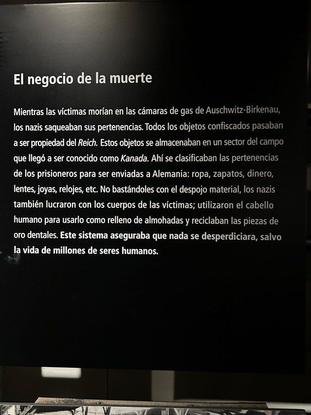
Sala 12
Saqueos
El exterminio masivo funcionó también como una gigantesca operación financiera de saqueo estatal. A través de sectores especializados en los campos, como el almacén Kanada en Auschwitz, el régimen confiscaba y clasificaba sistemáticamente cada objeto de valor de las víctimas para enviarlo a Alemania. Ropa, joyas y recursos financieros fueron absorbidos por las arcas del Estado, transformando el genocidio en una fuente de enriquecimiento material.
El negocio de la muerte
Mientras las víctimas morían en las cámaras de gas de Auschwitz-Birkenau, los nazis saqueaban sus pertenencias. Todos los objetos confiscados pasaban a ser propiedad del Reich. Estos objetos se almacenaban en un sector del campo que llegó a ser conocido como Kanada. Ahí se clasificaban las pertenencias de los prisioneros para ser enviadas a Alemania: ropa, zapatos, dinero, lentes, joyas, relojes, etc. No bastándoles con el despojo material, los nazis también lucraron con los cuerpos de las víctimas; utilizaron el cabello humano para usarlo como relleno de almohadas y reciclaron las piezas de oro dentales. Este sistema aseguraba que nada se desperdiciara, salvo la vida de millones de seres humanos.
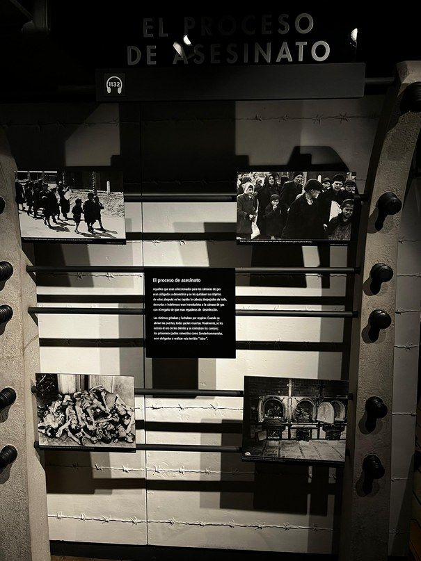
Sala 13
Proceso de Asesinato
La perversión de la maquinaria concentracionaria alcanzó su límite al forzar a los propios prisioneros a participar en la logística del horror. Los llamados Sonderkommandos eran obligados a extraer los restos de valor y trasladar los cuerpos hacia los hornos tras cada ejecución. Esta manipulación extrema no solo buscaba la eliminación física de un grupo, sino romper cualquier barrera de moralidad y empatía dentro del campo.
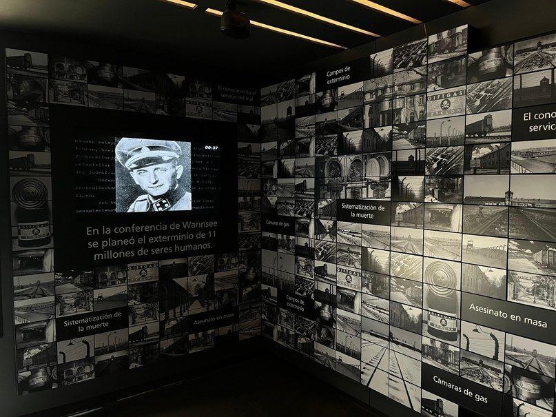
Sala 14
Solución Final
En enero de 1942, la Conferencia de Wannsee marcó el punto donde el odio ideológico se transformó en un frío plan administrativo. Altos funcionarios del régimen se reunieron con el único propósito de coordinar la logística para el exterminio planeado de 11 millones de personas a escala continental. Esta reunión convirtió el asesinato masivo en un proyecto gubernamental minuciosamente organizado y estructurado.
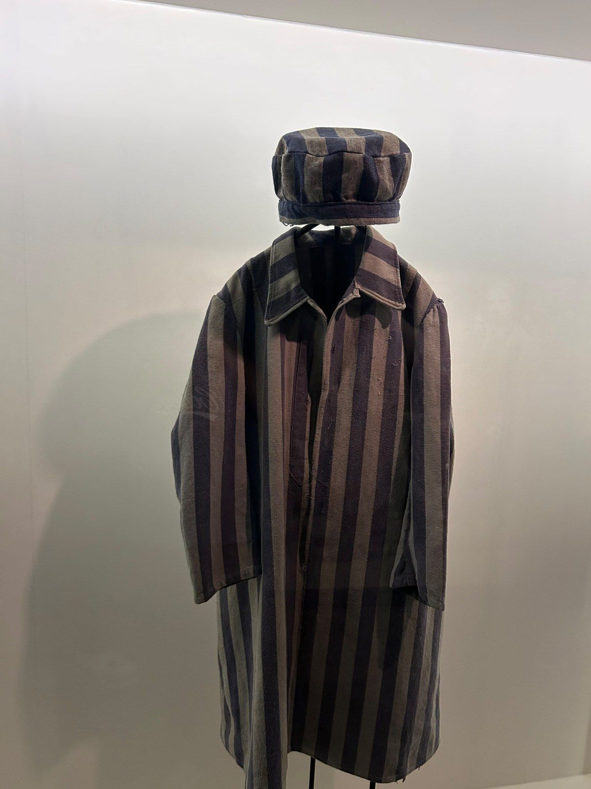
Sala 15
Vestimenta
Prendas utilizadas por las personas en los campos de concentración y exterminio
Planea tu visita
Museo Memoria y Tolerancia
Este recorrido está inspirado en la exhibición permanente del Museo Memoria y Tolerancia, un espacio dedicado a la reflexión sobre la memoria histórica, la ética y la responsabilidad social frente a la intolerancia.
Dirección
Av. Juárez 8, Colonia Centro, Cuauhtémoc, 06010, Ciudad de México, CDMX
Teléfono
El mensaje del recorrido
Los discursos de odio producen dolor, rechazo, violencia y pérdida de vidas humanas.
Sala 17
Comparte tu reflexión
La memoria histórica permanece viva cuando compartimos lo que aprendemos.
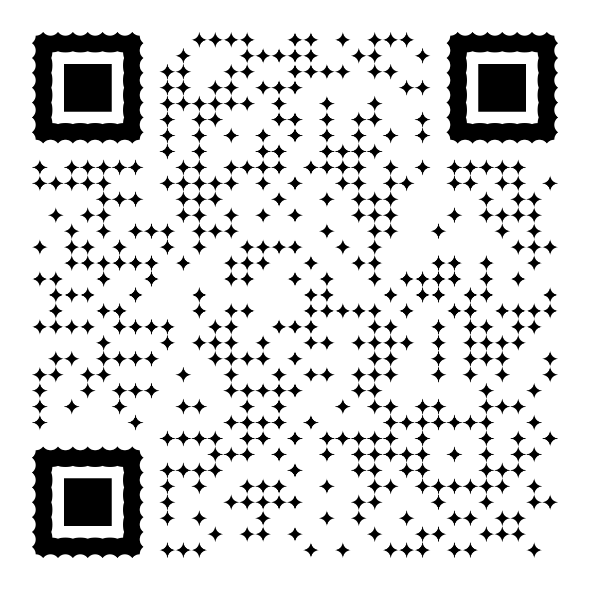
Reflexiones de nuestros visitantes
Cargando reflexiones…